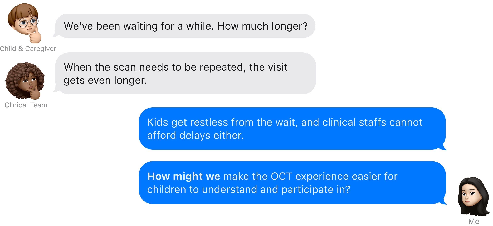
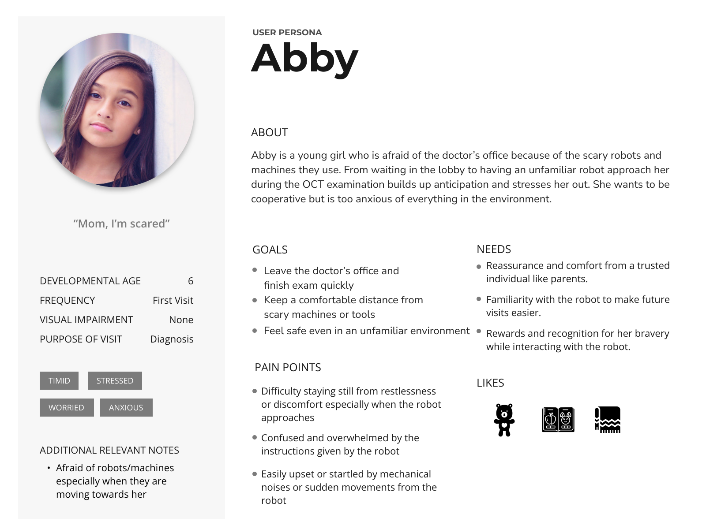
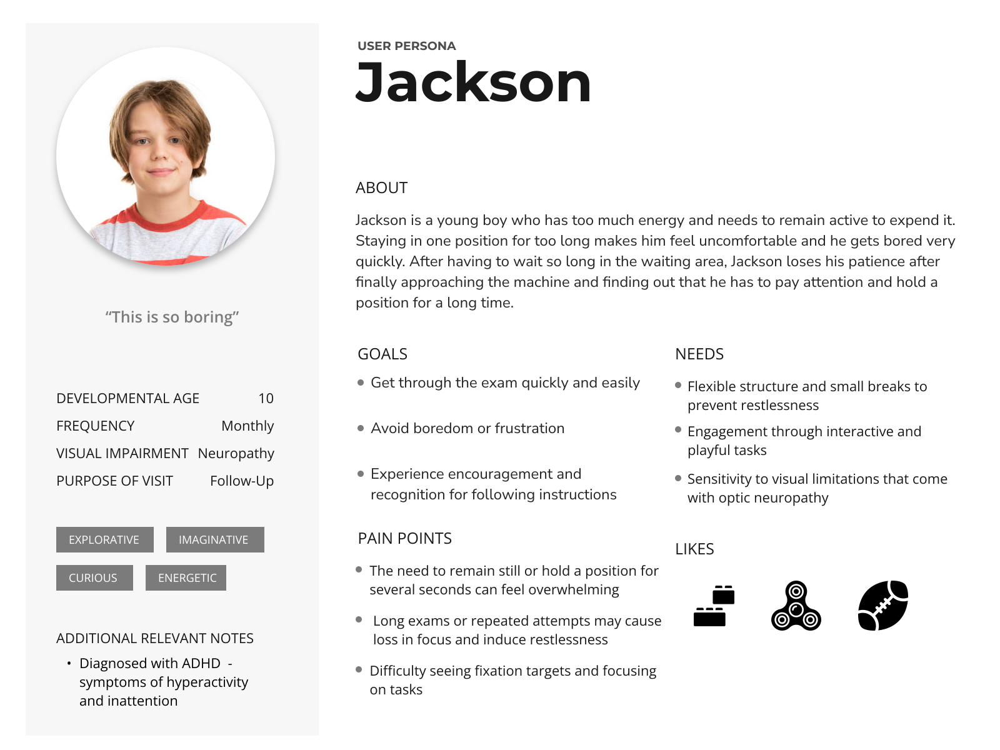
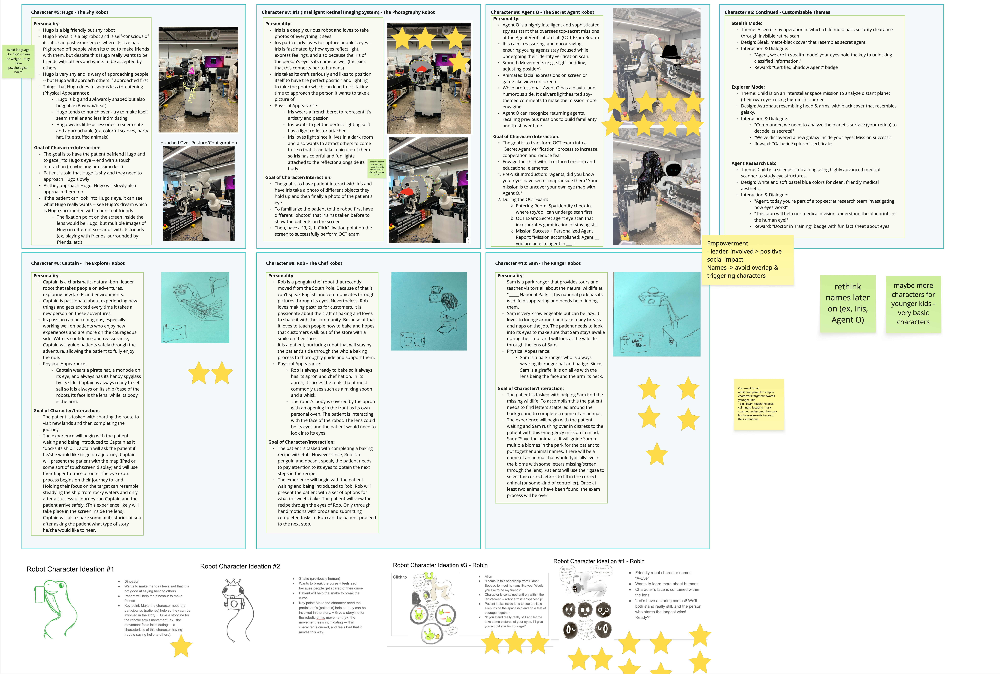
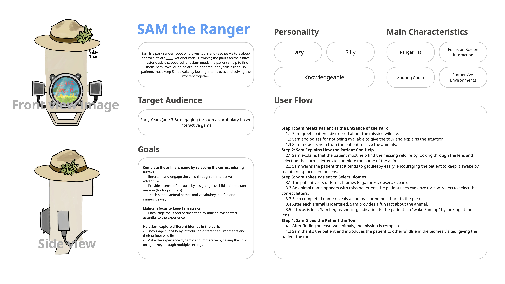
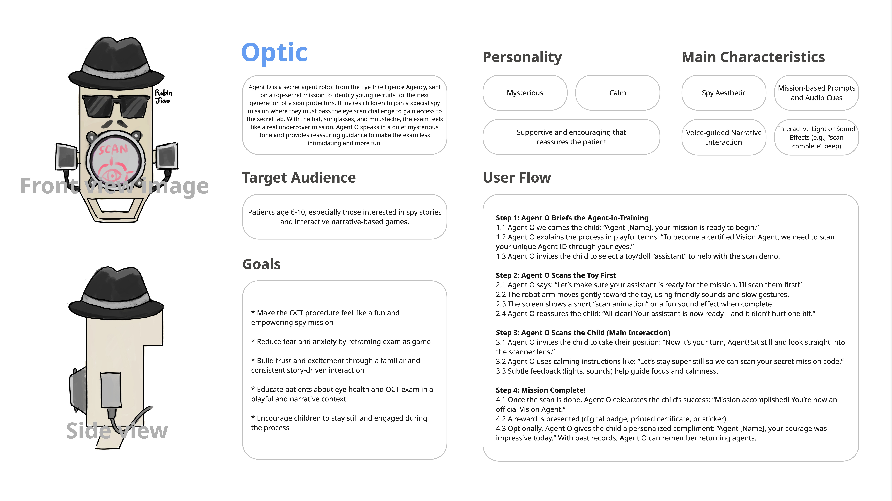
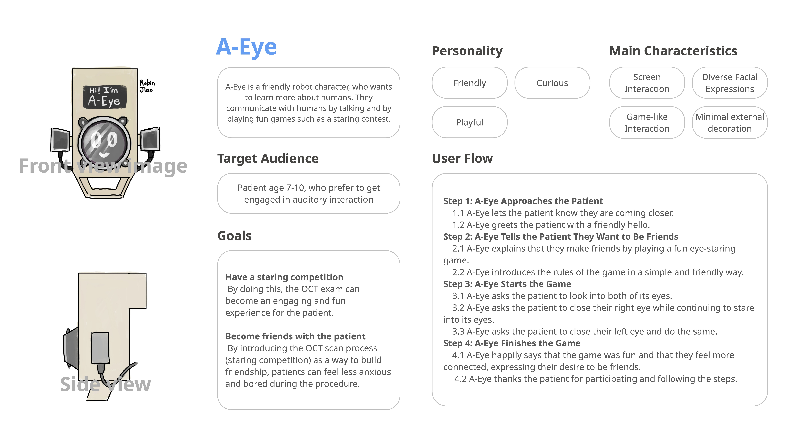
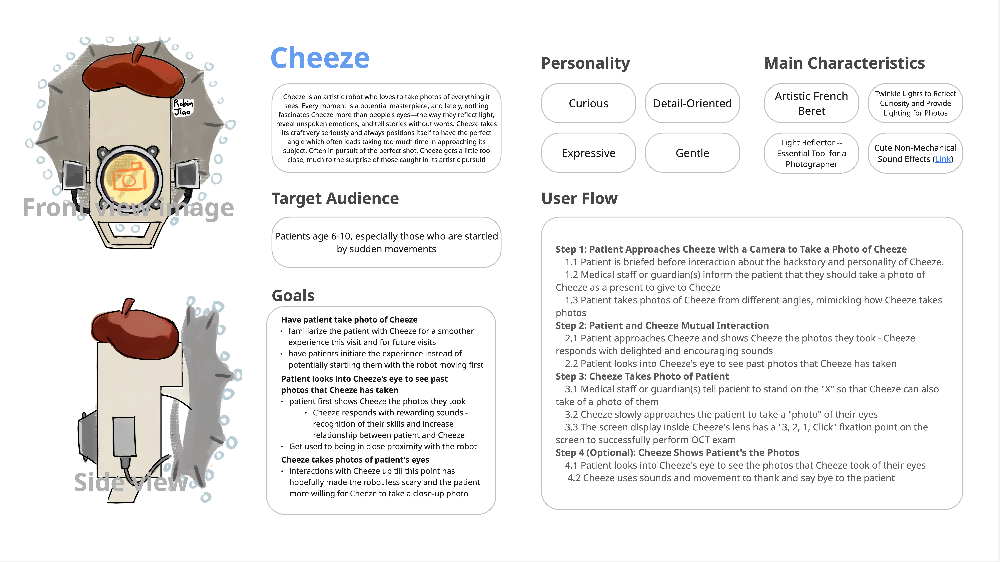
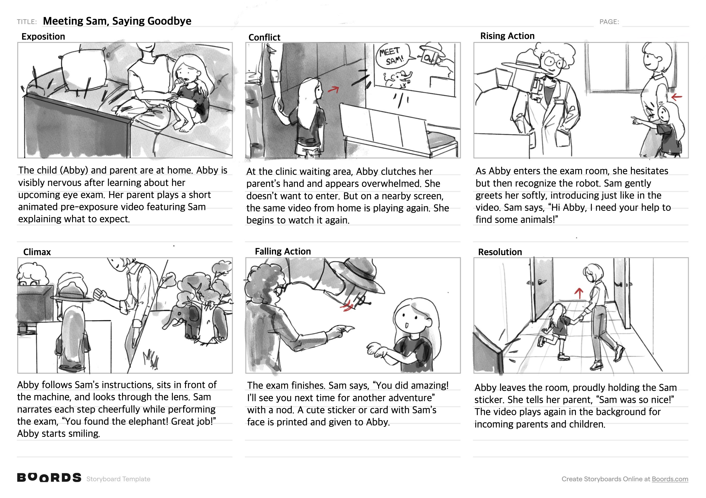
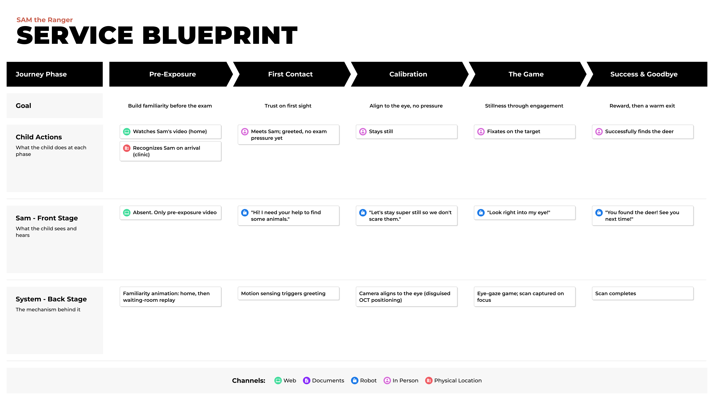

01 Prepare Before First Contact
Knowing what to expect can reduce uncertainty.
Introduce the robot before the visit.
Using caregiver research to shape a robot’s character and interaction design.
Problem
Eye scans require children to stay still, and movement means repeating the exam.
Solution
A character-led experience that prepares children for the scan and keeps them engaged through it.
Background
Optical coherence tomography (OCT) is an eye scan that requires children to keep their eyes on a target while the scanner moves close to their face. If they look away or move, the scan may be repeated, straining the child, caregiver, and clinical team.
Research
When I joined, the engineering team had already built a robotic arm that scans from multiple angles and postures. I focused on the experience around it.
We conducted a service safari at Kellogg Eye Center, walking through the full visit in pairs from the waiting room to the scan. Clinical staff walked us through each step, including what happens when a scan needs to be repeated.


The walkthrough gave us an initial hypothesis about where the experience could break down.

Research
We ran a literature review and comparative evaluation of children’s media, medical preparation, and child–robot interaction to understand how an unfamiliar clinical experience could become easier to approach. We identified 3 design criteria:
Knowing what to expect can reduce uncertainty.
Introduce the robot before the visit.

Participation can help children stay engaged during a task that requires stillness.
Give the child a mission.

Clear cues can help children understand what the robot will do next.
Signal movement before it happens.
Ideation
Children do not experience the OCT visit in the same way. Differences in age, attention span, temperament, and familiarity with medical equipment can change what helps a child cooperate.
We synthesized two representative profiles from the literature, clinical walkthrough, and team discussion. They were not individual patient profiles. We used them to test whether a character or interaction idea could support different needs within the same procedure.


Ideation
The personas described different needs. We mapped their journeys to locate where those needs appeared across the visit, from waiting to scan completion. Rather than measuring emotional change, the maps were hypothesis-driven tools for identifying opportunities for pre-exposure, reassurance, and engagement.
The younger profile needed support before and during the first close interaction. The older profile needed a reason to remain engaged during the scan itself. This suggested a broader character system could eventually support different interaction styles, beginning with Sam as the first direction to develop.
Age 6, comfort first

Age 10, mission first

Ideation
We diverged across the design team, developing 10 character concepts across animal, spy, medical, robot, and space themes. I proposed Optic, one of the four concepts that advanced. We then converged through a team-based concept review, weighing each direction against comfort and engagement and against feasibility with robotics, digital fabrication, and clinical collaborators. Materials couldn't add weight to the robot's joints, and surfaces had to withstand repeated cleaning with medical wipes.





The four selected concepts became character boards and the basis for the pre-exposure demos used in the caregiver study. I wrote the content and copy for Optic, while illustrations were done by teammates.
Ideation
To evaluate each character as an experience rather than a static board, the team created 4 low-fidelity pre-exposure videos using 3D-printed robot forms and simple props. I storyboarded the overall interaction of a child with Sam. The team used it as a shared template for all 4 characters, adjusting the dialogue and character details for each.
Each video showed how a character could introduce the scan and give a child a role in the experience. We used these prototypes as stimuli in the caregiver evaluation.

Ideation
We conducted a mixed-method caregiver evaluation with 30 caregivers, combining quantitative ratings, qualitative feedback, and pairwise comparisons. Each participant reviewed two randomly assigned character videos. I led the quantitative analysis, applying the Bradley–Terry model to estimate preference across matchups.
After analyzing 1,200+ responses, we discovered that:
70%
Preferred character-guided interaction over the traditional exam.
80%
Rated Sam very or extremely effective at engaging children.
60%+
Sam led every pairwise comparison.
Caregivers also pointed to specific features, music, verbal communication, animal noises, and soft textures, as what made a character feel effective.

Final Solution
I co-authored two Association for Research in Vision and Ophthalmology (ARVO) 2026 conference abstracts published in Investigative Ophthalmology & Visual Science. Covering the robotic character prototype and caregiver perspectives on pediatric OCT characters, I led the quantitative analysis sections.
Final Solution
I wanted to further explore how to make an idea evolve from a character concept into a scalable interaction system. I mapped the storyboard into a service blueprint for a broader experience easier to review and extend to future character directions.

I was curious on how I can use generative AI as a tool for rapid prototyping in a field where physical iteration is slow. I prompted a concept film to visualize the interaction before committing to another physical build. Using Higgsfield, I generated keyframe images of the robot in the clinic environment, converted them into short video clips, and edited the sequence in Canva.
Reflection
Constraints
I knew little about medical devices or robotics going in. Working with engineers and clinicians meant learning enough, fast, to make design decisions they could trust.
Design decisions had to be framed as constraints and trade-offs other fields could act on, not just visuals to approve.
Room for Improvement
Validation came late. I'd want to get a rough prototype in front of real testing sooner instead of refining internally first.
Next Steps
Carrying this from a concept film into an actual behavior on the robot itself.
Optic + verdict
Strongest runner-up, especially with older curious kids. The mysterious persona needs pre-exposure videos, so it stays on the roadmap.
Sam the Ranger ★ prioritized
The Bradley-Terry model predicts caregivers choose Sam head-to-head: 62% over Optic, 68% over Cheeze, 76% over A-Eye. One risk, the camera reading as a weapon, I reframed as binoculars in Sam's narrative.
A-Eye + verdict
Lowest scores, and the clearest lesson. Its narrative called the scan a staring contest, children caught the lie, and that failure became the system's first principle.
Cheeze + verdict
Strong visuals and storytelling, with a weak signal among anxious children. A photo interaction raised privacy flags, so future versions use pre-existing imagery.